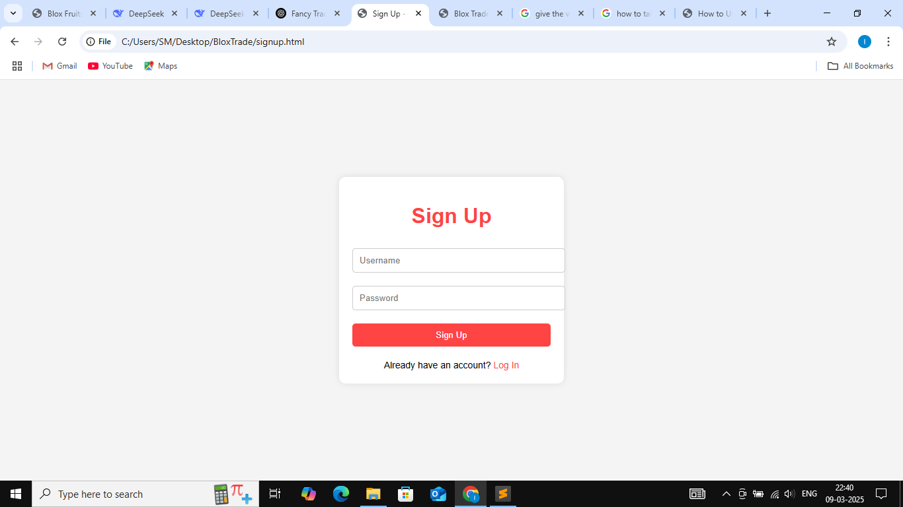
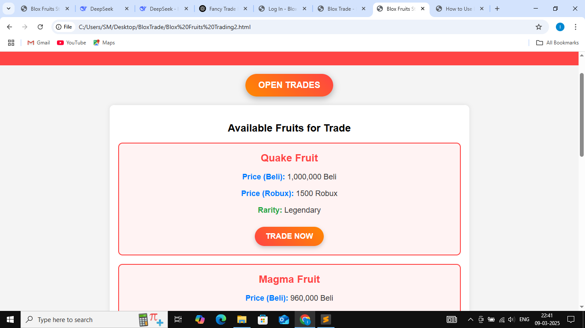
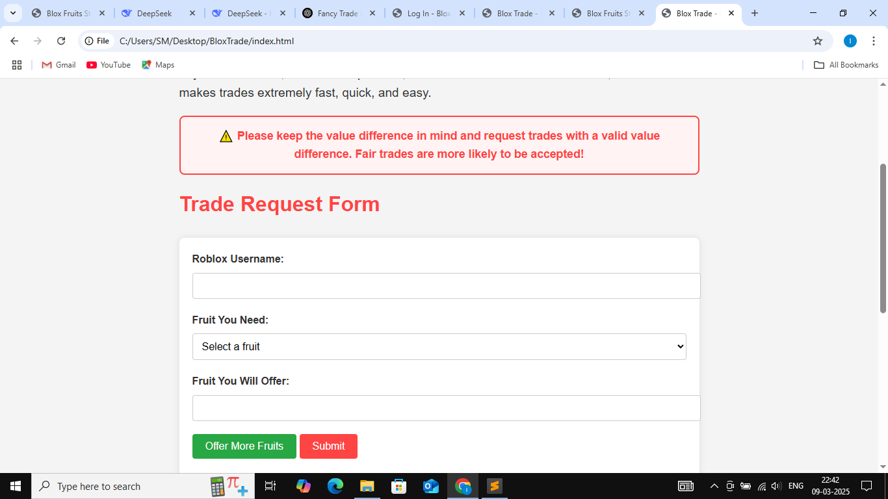

Step-by-Step Guide
Step 1: Create an Account
To get started, click on the Sign Up button on the homepage. Fill in your Roblox username and create a password. Once your account is created, you can log in to access all features.
Step 2: Log In
After creating your account, log in using your Roblox username and password. Once logged in, you will be redirected to the trading dashboard.
Step 3: Browse Available Fruits
Navigate to the Stock page to view the list of available fruits for trade. Each fruit is displayed with its price in Beli and Robux, as well as its rarity.
Step 4: Submit a Trade Request
To request a trade, fill out the Trade Request Form on the homepage. Enter your Roblox username, select the fruit you need, and list the fruits you are offering. You can offer up to 4 fruits in a single trade.
Step 5: Review and Confirm
After submitting the form, review the trade details. If everything looks good, confirm the trade. You will receive an email with the trade details and a special code for verification.
Step 6: Complete the Trade
Once the trade is confirmed, meet the other player in the game and complete the trade. Use the special code provided in the email to verify the trade.
⚠️ Remember to keep the value difference in mind and request trades with a valid value difference. Fair trades are more likely to be accepted!